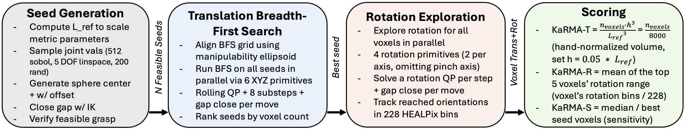
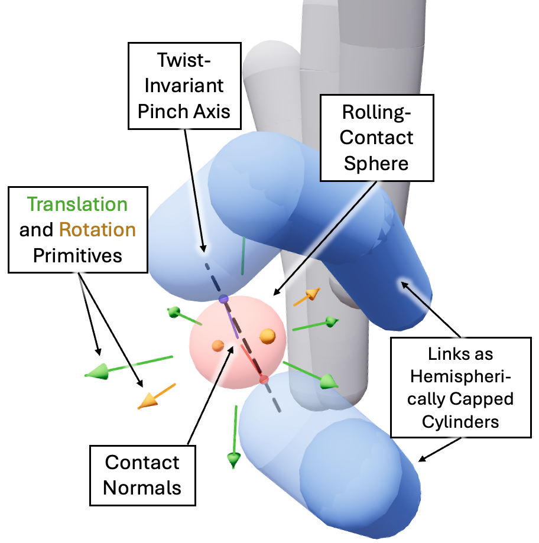

Robotic hands are usually compared by simple proxies like degrees of freedom, fingertip workspace, jacobian manipulability, etc. However, none of these measure dexterity in the sense most used in robotic manipulation: continuously changing an object's pose while holding it (Bicchi, 2000). KaRMA aims to measure exactly this. From a two-finger thumb–index pinch on a small sphere, it computes how far the hand can move the object to new positions and reorient it under maintained contact / rolling. It enforces joint limits, collisions, and force-closure. The result is three scores computed from a URDF, without any conflating variables introduced in the lengthy process of turning a kinematic model into a full hand system, which involves building, training controllers, integrating sensors, etc.
Reachable volume of in-hand object positions, normalized by hand size.
Share of orientations the object can be rolled into across that workspace.
How much the result depends on the starting pinch.
This is what the two scores measure. From a thumb–index pinch, the hand reorients the sphere in place, then rolls it out across the reachable workspace and back. Every pose is replayed from the metric run itself, over the same voxel cloud the leaderboard scores. Pick a hand to watch.
Each voxel is a position the hand can move the sphere to. The voxel's color is how much the object can be reoriented there. Pick any two hands and drag, and the views rotate together.
In the example below, Allegro's reachable set stays green (the object reorients freely almost everywhere) while D'Claw's is mostly red despite a similar spread of positions. We can visually see translation reach does not imply rotation coverage. See the selected comparisons for other interesting results.
Each entry loads its pair into the viewer above.
KaRMA-T spans two orders of magnitude across these hands, and the two abilities it separates, translation and rotation, do not always agree (as we saw above): LEAP has the widest reach, Allegro reorients best while ranking only second in reach, and the 6-DOF D'Claw beats the 9-DOF Shadow by roughly three times.
| # | Hand | DOF | Lref (mm) | Tot. range | Thumb WS | Opposability | Yoshikawa | GCI | KaRMA-T | KaRMA-R | KaRMA-S |
|---|
† marks the five hands with two or fewer index DOF and zero fingertip-workspace overlap (opposability 0). They score nonzero only because the fingers roll the sphere along a lower-dimensional path, and unlike the other eleven they cannot move the object by rolling alone: they need 11 to 32 percent sliding at the contact, with no hand in between, so the † falls out of the data rather than a chosen cutoff. KaRMA-S is shown as — for the three hands with fewer than ten reachable voxels (Inspire, SVH, Ability). All values reproduce Table I of the paper.

1. Seed grasps. Candidate thumb–index pinches are generated deterministically and projected onto the two-contact manifold with inverse kinematics. Every feasible seed is evaluated.
2. Translation search. From each seed, a breadth-first search rolls the sphere along the principal axes of the grasp. Each step solves a small rolling-contact quadratic program and checks joint limits, collisions, and antipodal force feasibility.
3. Rotation exploration. At every reached position, the sphere is tilted about its two controllable axes, recording how many of 228 equal-area orientation bins (HEALPix) are reachable.
4. Scoring. Reachable volume gives KaRMA-T, orientation coverage gives KaRMA-R, and the spread across seeds gives KaRMA-S. Lengths are non-dimensionalized by a hand-size constant so scores compare across hands. See the paper for the full formulation.

KaRMA-S is the ratio of a hand's median grasp to its best grasp, showing whether the hand's performance is an upper bound concentrated at a specific, narrow window of initial grasps, or if most grasps will do that well. D'Claw ranks third in KaRMA-T, but its median pinch reaches only about a quarter of its best, so its reach depends on selecting just the right grasp. Allegro ranks second, and its median pinch reaches more than half of its best, so most all the initial grasps perform close to the best grasp.
Rolling from a single grasp reorients the object only so far. Even the most capable hand, at its best position, reaches only about a third of all orientations of the pinch axis, and most hands reach far less. This ceiling is why in-hand manipulation can sometimes require cumbersome regrasping and finger-gaiting, and more on some hands versus others. KaRMA measures how far a hand gets from one fixed grasp, before either.
KaRMA-R scores a hand's strongest reorientation, the mean coverage of its five best positions. How far that ability spreads across the rest of the workspace is a separate question, and KaRMA's per-voxel map answers it directly. Sharpa and Wuji post the same KaRMA-T and nearly the same KaRMA-R, yet high rotation coverage reaches 27 percent of Sharpa's positions and only 9 percent of Wuji's. The score gives the best a hand can do, and the map shows how much of the workspace reaches it.
Translation and rotation correlate overall (Spearman ρ = 0.96), but the mid-table hands split in task-relevant ways: Allegro reorients well while repositioning less, and LEAP does the opposite. No baseline predicts which way a given hand will lean.
Workspace opposability tracks KaRMA-T reasonably (ρ = 0.93) but still misranks a quarter of the hands by two or more positions, and the Jacobian-based measures do not track it at all (Yoshikawa ρ = −0.20, global conditioning index ρ = −0.08). A low-DOF hand like Ability has a trivially well-conditioned Jacobian and the highest GCI, yet ranks last in KaRMA.
The scores are invariant to translating, rotating, or uniformly rescaling the hand model, and are identical bit-for-bit across runs. Where task benchmarks exist (DexMachina, ISyHand), KaRMA agrees with them in the directions simple proxies miss.
Dividing by hand size cubed keeps a larger hand from scoring higher for scale alone: the largest hand, D'Claw at 327 mm, ranks only third, and the 177 mm Wuji outscores the larger DLR. Size still correlates with KaRMA-T (ρ = 0.71), but as a proxy for the joint count and range that larger research hands tend to carry, not for scale itself.
Adding the constraints one at a time to the raw contact-gap search shows that joint limits remove most of the naive workspace. Each cell is KaRMA-T, the fraction of an Lref cube filled:
| Hand | Gap | +JL | +Col | Full |
|---|---|---|---|---|
| LEAP | 0.580 | 0.241 | 0.123 | 0.099 |
| Shadow | 0.509 | 0.016 | 0.016 | 0.014 |
| xHand1 | 0.781 | 0.007 | 0.007 | 0.004 |
| Dex3 | 0.007 | 0.004 | 0.004 | 0.004 |
| Inspire | 0.0005 | 0.0005 | 0.0005 | 0.0005 |
Joint limits alone cut the unconstrained workspace by 58–99% for the non-floor hands. Inspire is limited by kinematic infeasibility, not constraints, so its four voxels survive every level.
KaRMA is a standardized lower bound on thumb–index rolling-pinch dexterity, not a universal dexterity score. It looks at one two-finger pinch on a sphere under maintained rolling contact, with no regrasping or finger gaiting, and uses kinematics only. Those assumptions make hands comparable but mean the metric does not on its own predict task success on arbitrary objects. It is meant to complement full task benchmarks, for hand procurement and kinematic design iteration.
KaRMA is CPU-only, needs no training, and evaluates a hand in seconds to a few minutes from its URDF. All 16 hands run in under 18 minutes on a desktop.
git clone https://github.com/mfpeticco/karma-hand-metric
cd karma-hand-metric
conda env create -f environment.yml && conda activate karma-hand-metric
# score a bundled hand
python run_metric.py --config robots/robot_leap.yaml
# add your own: drop a URDF in robots/urdfs/, copy robot_template.yaml,
# fill in the thumb/index chains, then run_metric.py --config your_hand.yamlFull instructions, the 16 hand configs, and every result file are in the code repository.
@inproceedings{peticco2026karma,
title = {A Kinematic Metric for Fine Manipulation Ability in Robotic Hands},
author = {Peticco, Martin and Agrawal, Pulkit},
booktitle = {IEEE/RSJ International Conference on Intelligent Robots and Systems (IROS)},
year = {2026}
}Supported in part by the Ministry of Trade, Industry, and Energy (MOTIE), Korea, under the Global Industrial Technology Cooperation Center program supervised by KIAT (Grant P0028435); by PEGATRON Corporation under the 2026–2030 MIT-PEGATRON Prometheus Research Collaboration Program; and by Analog Devices Inc. We thank the Improbable AI Lab for helpful discussions.